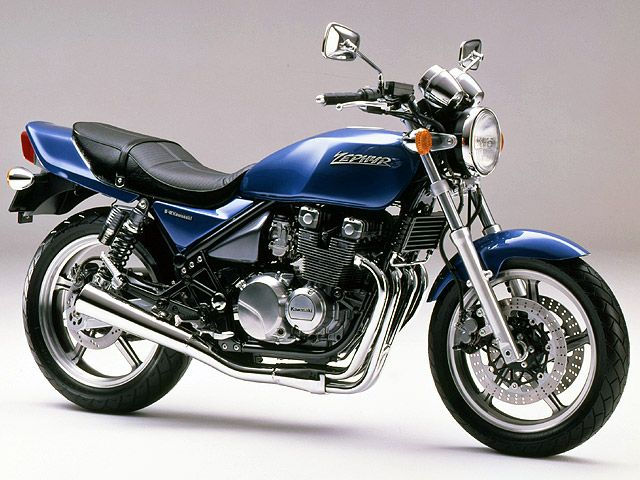
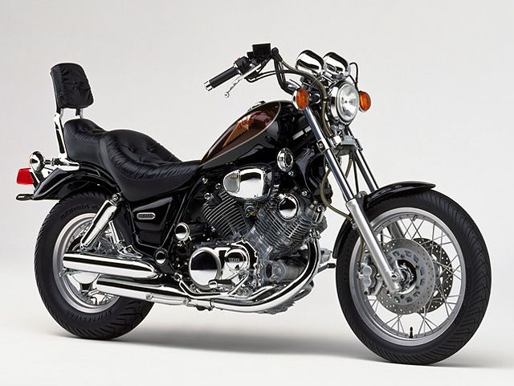

Web Extention
CHAPTER05 課題
これまでの課題
CHAPTER01 課題 「Windows環境でHTMLを作ってみよう」
CHAPTER02 課題 「Linux環境でHTMLを作ってみよう」
CHAPTER03 課題 「マークアップの考え方トレーニング」
CHAPTER04 課題 「自己紹介ページ」
CHAPTER05 課題 「リンク、画像、コメント、特殊文字」
この記事の内容
はじめまして。今回はわたくしYûの好きなバイクをお教えしたいとおもいます。
それは...
バイク
ゼファー(ZEPHYR)

コメント
わたくしの一番好きなバイクはゼファーです。
ビラーゴ

コメント
ビラーゴは一度乗ってみたいバイクです。
ゼファー(ZEPHYR)
ビラーゴ
TOP